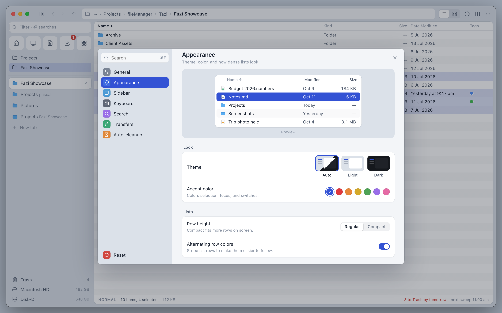
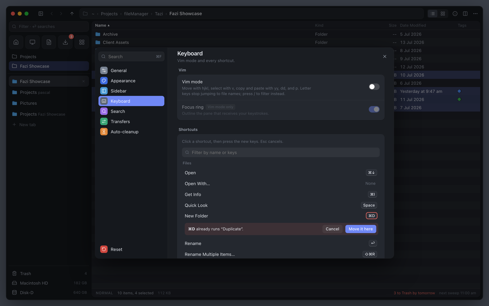

Sheet A
The closest step from today. Settings stays a modal over the window, but it is larger and grouped into inset cards like macOS System Settings. Each section has a tinted icon and a count of what you changed, and Appearance opens with a live preview.
- Navigation
- Sidebar list; ⌘↑ and ⌘↓ step through sections
- Strength
- Familiar to every Mac user; lowest build cost
- Tradeoff
- Covers the window, so you see Appearance changes in the preview, then in the app after closing